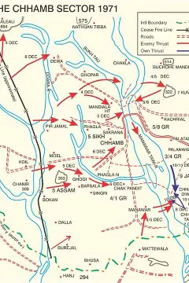

Military Mobilization

The armed forces have been put on high alert following border tensions. Strategic movements were observed overnight as units moved to defensive positions along the frontier.
DAILY JANGRawalpindi/Karachi | Sunday, December 5, 1971 |
|
Military Mobilization
The armed forces have been put on high alert following border tensions. Strategic movements were observed overnight as units moved to defensive positions along the frontier. |
Air Strikes ReportedReports indicate significant activity in the northern sectors. The government has issued an emergency appeal for national unity as defensive operations expand. Latest Bulletins:
|
National EmergencyA state of emergency has been declared nationwide. Citizens are advised to follow official radio broadcasts for instructions regarding safety measures and blackouts.  |